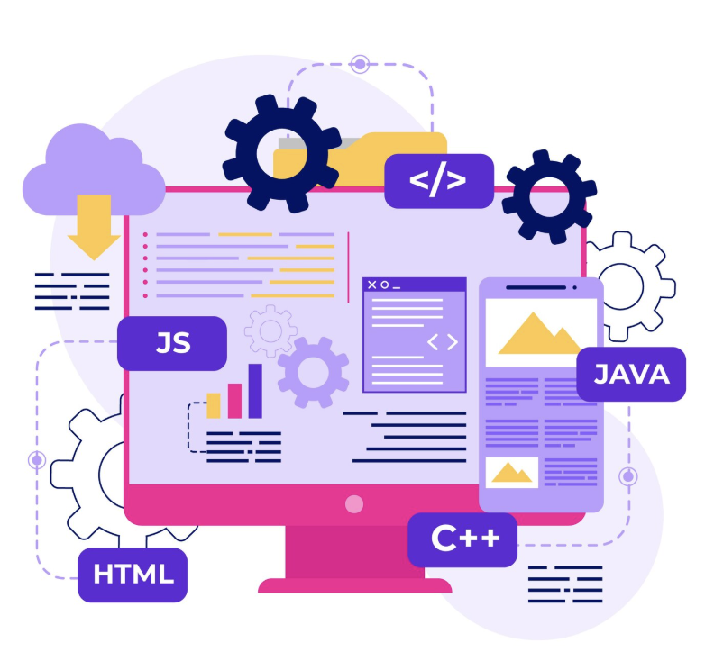
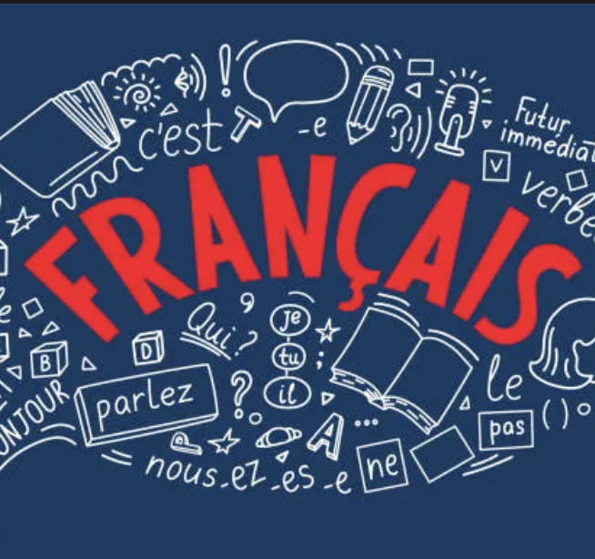

Education
Hunter College, New York, NY. Expected Graduation: June 2027
- Bachelors of Arts in Computer Science | GPA: 3.6
- Notable coursework: Intro to Applied Statistics, Operating Systems, Computer Theory 1
Park East High School, New York, NY. Graduation: June 2023
- Salutatorian | GPA: 100.15
- Notable coursework: AP Computer Science Principles, AP Calculus AB, Financial Literacy, Data Analytics
Work Experience
Summer Youth Employment Program (SYEP) - Lady Survivor. New York, July-August 2025
Virtual Administrative Intern
- Supported nonprofit startup small business operations through administrative, marketing, and strategic development tasks.
- Designed marketing collateral, newsletters, flyers, and business cards using Canva and other tools.
- Worked collaboratively with a virtual team to complete tasks and meet weekly goals.
Weekend/Evening Childcare (Volunteer). New York, NY, 2022-2024
- Provided weekend care for an 8- year-old, prepared meals, assisted in school work, planned activities, and maintained safety.
- Demonstrated strong responsibility, time management, and interpersonal skills.
- Effective Communication with guardians to ensure the well-being and safety of the child.
Additional Volunteer Activities
- Conduct street outreach weekly for 3+ hours; build trust and connect individuals with safe havens and services.
- Assembled and gift-wrapped 50+ holiday presents for children ages 3-8, supporting local charitable drives.
- Handwrote 40+ personalized postcards for Reclaim Our Vote to promote civic engagement.
Activities
Gender Sexuality Alliance Club (GSA). New York, NY September 2022-2023
Member
- Raised funds for LGBTQ organizations and supported institutional research (Columbia University, NYU) through surveys
- Fostered a safe, inclusive environment for students of all gender identities and sexual orientations.
Datactation LLC - Cybersecurity Program. New York, NY, Summer 2022
Participant
- Completed an introductory course on cybersecurity topics such as: cryptography, risk management, and digital footprints
Crochet Club. New York, NY, September 2019-2023
Member and Peer Instructor
- Mastered techniques including stitching and amigurumi. Completed 30+ projects with 50+ hours of hands-on work
- Volunteered 14+ hours mentoring peers and onboarding new members.
Skills
Technical & Digital Skills
| G Suite | Microsoft Office | Canva | Social Media Platforms | Virtual Collaboration Tools | Python (basic) | C++ (basic) | HTML/CSS (basic) |
Communication, Leadership
| Clear written and verbal communication | Remote collaboration | Delivered salutatorian speech to 400+ attendees | Supervised childcare | Mentored crochet club peers |
Professional & Administrative Skills
| Created and managed online forms | Researched and compiled data for non-profits | Designed promotional materials | Met weekly deadlines |
Creative Design & Craftsmanship
| Proficient in Canva and digital design for marketing materials(flyers) | Designed custom crochet pieces and nail art with precision | Developed fine motor skills and attention to detail |
Awards & Achievements
- Peter F. Vallone Academic Scholarship (2023-2025)
- Salutatorian, Park East High School (2023)
- Park East Assistant Principal's Honor Roll (2022-2023)
Classes Taken
Intro to Applied Statistics
Basic statistical analysis, probability, and data interpretation.
Operating Systems
Definition of functions and components of operating systems. Survey of contemporary multiprocessing/multi-programming systems. Exploration of systems programs: their design, internal structure, and implementation.
Computer Theory 1
Recursion, regular sets, regular expressions, finite automata, context-free grammars, pushdown automata.
Calculus 2
Differentiation and integration of transcendental functions, integration techniques, infinite sequences and series, improper integrals, polar coordinates.
Computational Vision
Analysis of images of various forms (regular color images from cameras of mobile phones, 3-D range images, etc.) and video.
Practical Web Development

Popular technologies and tools used for full-stack web development, Git and GitHub, JavaScript, HTML.
Beginner French

Introduction to basic French language skills.